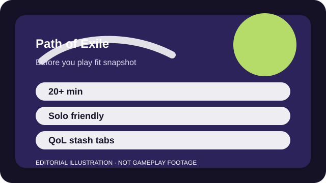

BEFORE YOU PLAY
What this page is and is not
This is a sourced editorial fit profile. It is designed to help with a yes-or-no play decision, and it does not claim a scored hands-on review.
The cleanest first test is whether following a beginner build sounds helpful or restrictive. Players who accept outside guidance usually settle in faster; players who insist on complete self-discovery often hit a wall sooner.
The first-session loop to judge is simple: Follow a build through the campaign, then chase stronger gear, maps, and seasonal systems with ever more specific goals.
The campaign is only the first layer; mapping, league systems, and build optimization are the real long-term loop.

FIT SNAPSHOT
Path of Exile at a glance
| Genre | Action RPG |
|---|---|
| Platforms | PC, PlayStation, Xbox |
| Business model | Free-to-play action RPG with cosmetic monetization and practical stash-tab convenience purchases. |
| Typical session | 20 minutes to several hours, depending on where you are in a league or build plan. |
| Play style | build-first loot RPG |
| Learning barrier | Path of Exile is famous for its build freedom, and that same freedom makes the first serious character much harder without guidance. |
| Social shape | The game works fine solo, while trading and community guides become useful if you care about efficiency. |
WHO IT FITS
Best fit, likely friction, and the social reality
players who enjoy theorycrafting, loot filters, and learning a build over a season
players who want a gentle first campaign or a self-explanatory passive tree
The game works fine solo, while trading and community guides become useful if you care about efficiency.
The campaign is only the first layer; mapping, league systems, and build optimization are the real long-term loop.
FIRST SESSION PLAN
How to test the fit in one evening
- Choose one beginner build you are willing to follow instead of improvising everything blind.
- Finish the campaign before worrying about perfect loot or advanced crafting systems.
- Learn one currency item at a time rather than treating the whole economy as day-one homework.
- Decide whether the game's planning-heavy style is enjoyable before buying stash upgrades.
Use the first session to answer these fit questions instead of judging rank, win rate, or store value immediately.
- Do you enjoy reading build guides instead of discovering every system alone?
- Can you live with a rough first character if the long-term depth is excellent?
- Do you want power depth more than elegant menus and onboarding?
TIME, COST, AND COMMITMENT
What you are really signing up for
| Session budget | 20 minutes to several hours, depending on where you are in a league or build plan. |
|---|---|
| Social demand | The game works fine solo, while trading and community guides become useful if you care about efficiency. |
| Progression shape | The campaign is only the first layer; mapping, league systems, and build optimization are the real long-term loop. |
| Spending pressure | Power is not directly sold, but stash tabs become a practical quality-of-life purchase for many committed players. |
A first season can consume a lot of reading time, even if your actual play sessions are short and modular.
Power is not directly sold, but stash tabs become a practical quality-of-life purchase for many committed players.
SOURCES AND LIMITS
What was checked, and what can change
- League mechanics and economies reset regularly.
- Build recommendations shift hard when balance patches hit the passive tree or core skills.
- Stash sales and cosmetic promotions change independently of gameplay fit.
This profile uses official game pages and defensible general product knowledge to frame the player fit. It does not claim live testing across every platform, accessibility need, or current event rotation.